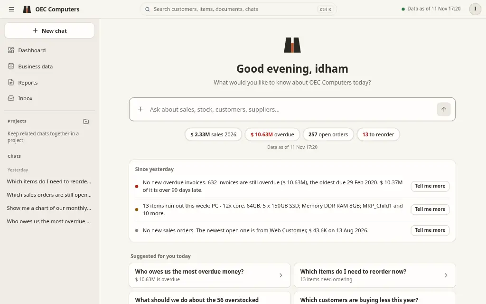
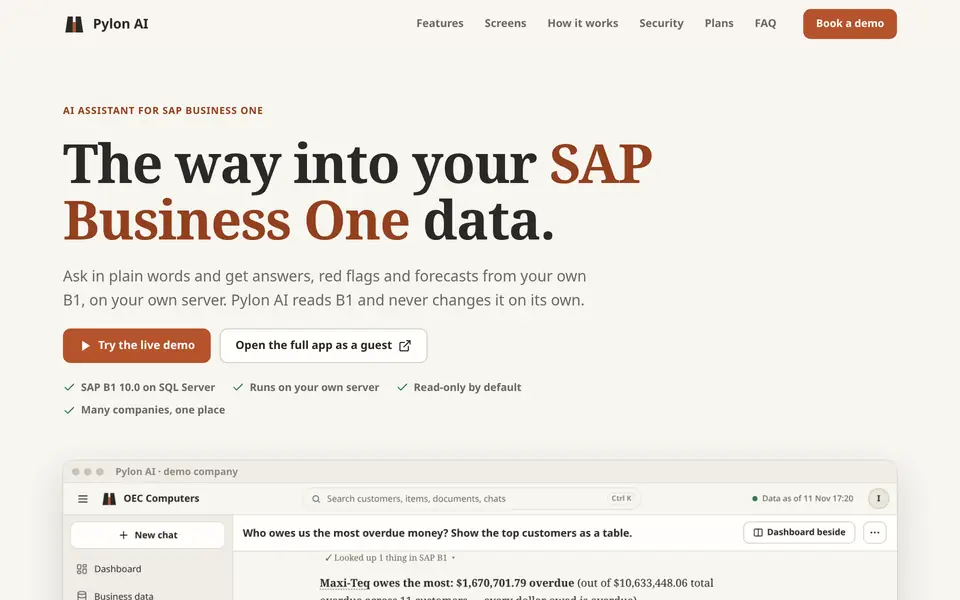

Idham Hakim
I put AI models to work inside the systems a business already runs on. People ask in plain language and get answers they can trust, and routine work gets done automatically.

Featured project: Pylon AI, an assistant for SAP Business One (live recording, public demo data)Featured project: Pylon AI on a phone (public demo data)
- AI tools
- 55each checked against the person's role
- One-click reports
- 12from sales forecast to who owes us
- SAP document types
- 20drafted only after a person says yes
- Tables kept offline
- 47answers continue when SAP is down
- Roles
- 5from sales to warehouse, each sees only its own areas
Figures from Pylon AI, my featured project, built and run by me.
AI that fits the way a business already works
Not a chatbot bolted on the side: AI connected to the real data and tools, with the checks a company needs before it trusts the answers.
Assistants on your own data
Ask a database, ERP or set of spreadsheets in plain language and get exact figures, tables, charts or an Excel file back.
AI that acts, with a person in charge
The AI looks things up and prepares work; anything that changes data waits for a person to review and say yes.
Private and self-hosted
Models that run on the company's own server, so sensitive data never leaves the building. Read-only access and roles by default.
Automation and reports
Scheduled data syncs, forecasts, alerts, PDF and Excel reports, and emails drafted for a person to send.
Dashboards and internal tools
Web pages and desktop apps people actually use, on a PC or a phone, in light or dark.
Works with what you have
SQL Server, MySQL, Snowflake, SAP Business One, Excel, Word, Outlook and web APIs.
Before and after
Understand the need
Which questions take too long to answer, and which work is repeated every day.
Connect AI to the data
Safe, read-only access first, with tools the model can call and checks on every figure.
Ship and improve
Put it in people's hands early, watch how it is used, and fix what gets in their way.
An AI assistant for a company's ERP
One example of the approach, applied to SAP Business One. The same building blocks work for any system with data behind it.
Pylon AI
The challenge
Answers about sales, stock, receivables and orders sat inside SAP Business One, behind reports only a few people knew how to run. Managers waited, and the numbers were often out of date when they arrived.
The approach
A private AI model on the company's own server, connected to SAP through read-only lookups it calls as tools. Every figure is checked, each role sees only its areas, and changes wait for a person's yes.
The result
Anyone can ask in plain language, in the browser or on a phone, and get exact figures, tables, charts or an Excel file in seconds, plus a dashboard and one-click reports. It keeps answering when SAP is offline.
At a glance
- Status
- In daily use
- Used by
- Sales, purchasing, finance, warehouse and management
- AI model
- Runs locally on the server's own GPU (Ollama)
- SAP access
- SQL Server read-only; drafts through the Service Layer after a yes
- Runs on
- One Linux PC: Docker, systemd and Tailscale
- Also automated
- Nightly sync, reorder planning, forecasts, unusual-transaction checks, a PDF report pack and stock alerts
Product website

Video tour (1:32)
Recorded from the live app on SAP's public demo company; AI thinking time is sped up. Music composed for the video.
Ask the AI yourself
Pick a question about SAP's demo company, OEC Computers, and watch the AI answer it from SAP Business One. Or open the whole app as a guest: chat, dashboard, business data and reports, no sign-up.
Pick a question to see it answered
Checking whether my server is online…
Runs on my own server, so there are a few questions per visitor and one answer at a time. Read-only. The simple demo saves nothing; a guest visit keeps your chats for 24 hours, then deletes them.
Ask in plain language
"Who owes us the most overdue money?" The AI looks it up in SAP B1 and answers with the figures, a table or a chart, and an Excel file when asked.
- Answer tables with filter, totals, copy and Excel
- Charts drawn from the real figures
- Names in answers open their record
- Answers keep going in the background
Management dashboard
Sales, invoices, customers, money owed, open orders and stock to act on, each tile opening its documents, with a period picker and on-demand refresh from SAP.
- Key figures against the same days last year
- Money owed split by age
- A question bar under the figures
Business data
Browse customers, suppliers, items and documents, read-only, with filters, status badges and Excel export. Every row opens a record page.
- Record pages with figures, tabs and a 12-month chart
- "Ask AI about this customer" from the record
- Tables become cards on a phone
Reports in one click
Sales, forecast, customer insights, product profitability, reorder list, inventory health and who owes us. Each run is kept as a version and downloads as Word, PDF or Excel.
Keeps working when SAP is offline
When the SAP B1 server can't be reached, answers come from a copy of the data saved on the AI server, and the app says so plainly, with the date of the copy.
- A status pill: live data or saved data
- SQL Server queries translated to DuckDB
- Drafts into SAP always need the live system
Phone and dark mode
The whole app works on a phone, in light, dark or follow-the-device themes.
Runs on one Linux PC with Docker, systemd and Tailscale, one service per company. Press play to follow one question through it.
Read-only access
The AI uses a read-only database login. It cannot change SAP data.
Role-based areas
Sales, purchasing, finance and management each see their own areas.
Sign-in and private chats
A sign-in portal in front of everything, over HTTPS; each person's chats are their own.
Drafts need a yes
SAP draft documents are made only after a person reviews a preview and agrees.
Exact figures
Amounts in answers are checked against the data, not made up by the model.
Honest when offline
Answers from the saved copy say so, with the date the data is from.
What each piece does in Pylon AI.
- PythonMain language for the AI agent, its tools and the data jobs
- FastAPIWeb server behind the chat, the dashboard and streamed answers
- SQL ServerSAP B1's database, read through a read-only login
- SAP B1The ERP the AI reads from, and drafts into after a yes
- OllamaRuns the AI model locally on the server's own GPU
- pandasTurns SAP data into tables, totals and forecasts
- DuckDBOffline copy of SAP data, for answers when SAP is down
- DockerRuns the web proxy in its own isolated container
- CaddyHTTPS front door that checks sign-in on every request
- TailscalePrivate access for staff, and the public demo link
- LinuxThe server it all runs on, with nightly systemd jobs
- GitVersion control, with changes merged by pull request
Screenshots and demos use SAP's public demo company (OEC Computers), not client data.
What could AI do for you?
Pick what you use and what you want. You'll get a sketch of what I'd build, based on what I've already built.
1 · What do you use today?
2 · What do you want?
More things I've built
TFP Digital Quotation & Mailer
A Windows desktop app that produces branded Word and Excel maintenance quotations for 17–18 SAP Business One clients, with a companion Outlook mailer: templates, attachments, and reply tracking that stops reminders. The saved password is encrypted with Windows DPAPI; packaged with PyInstaller.
Academic projects
| Project | Built with |
|---|---|
| Darnoc IT E-Commerce Final year | PHP, MySQL |
| Student Borrow System | Java, MySQL |
| Zen Birthday App | Flutter, SQLite |
| Riing Catering | PHP, MySQL |
Where I've worked and studied
Experience
- AI Solution Executive (K-Youth Programme)Sep 2026 – presentMBP Solutions (TFP Group), at TFP Digital Sdn. Bhd., Kuala LumpurCurrent
- IT Support Technician (Internship)Sep 2025 – Feb 2026Q At Work (QAW)
Daily health checks on Talend, Tableau and Snowflake; Snowflake cost reports; UiPath reconciliation runs; about 50 tickets a week and KPI reporting.
- Technician (Internship)Mar 2021 – Jul 2021Kejuruteraan Perkasa Jaya Zic
Education
- Bachelor of Information Technology (Hons) in Software Engineering2022 – 2026UniKL MIIT
CGPA 3.50 · Dean's List ×3
- Diploma in Computer Engineering2019 – 2022MSU
CGPA 3.38 · Dean's List ×3
What I work with
Languages
Frameworks
Data & ERP
AI & ops
Let's talk
Have a process, a system or a pile of data you'd like AI to help with? Tell me about it. Email is the quickest way to reach me.